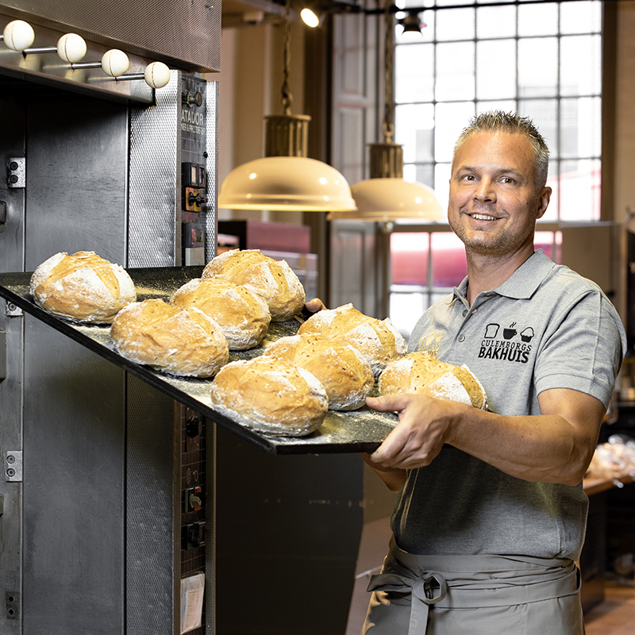
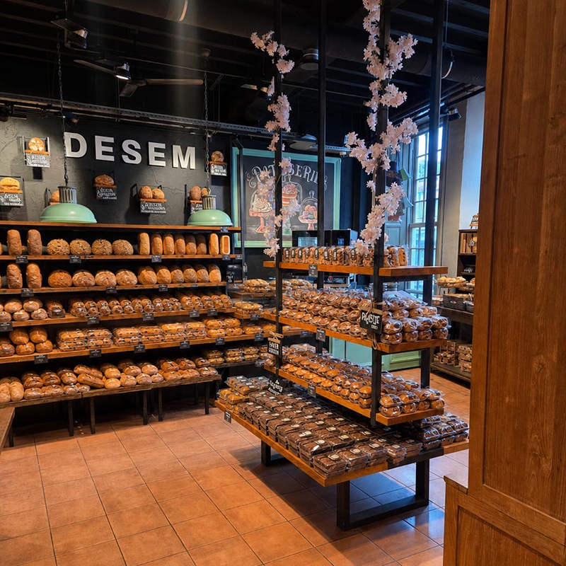
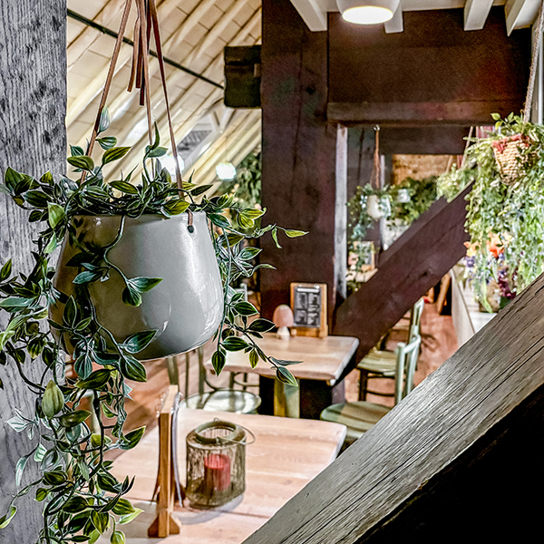
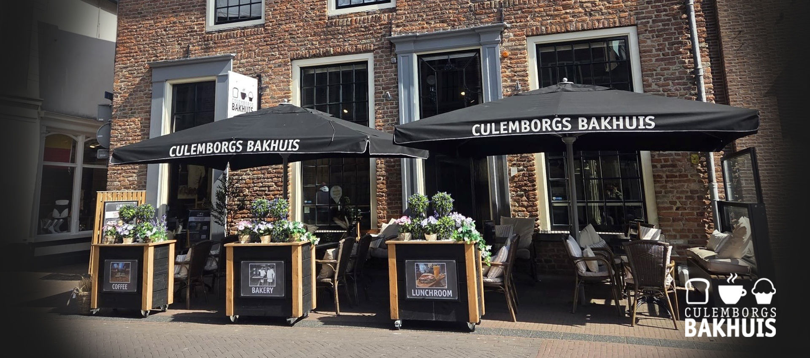
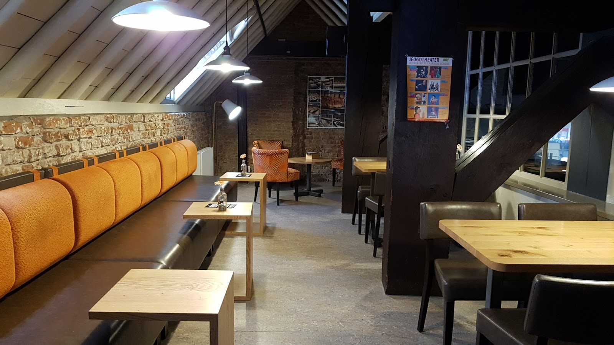
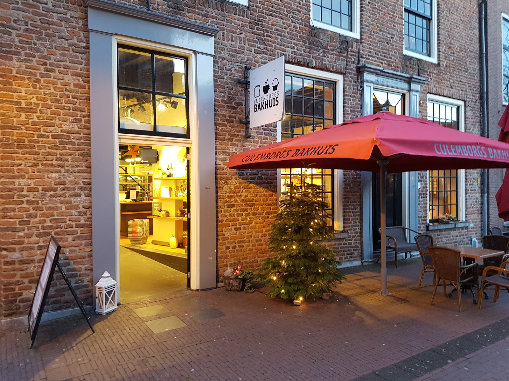
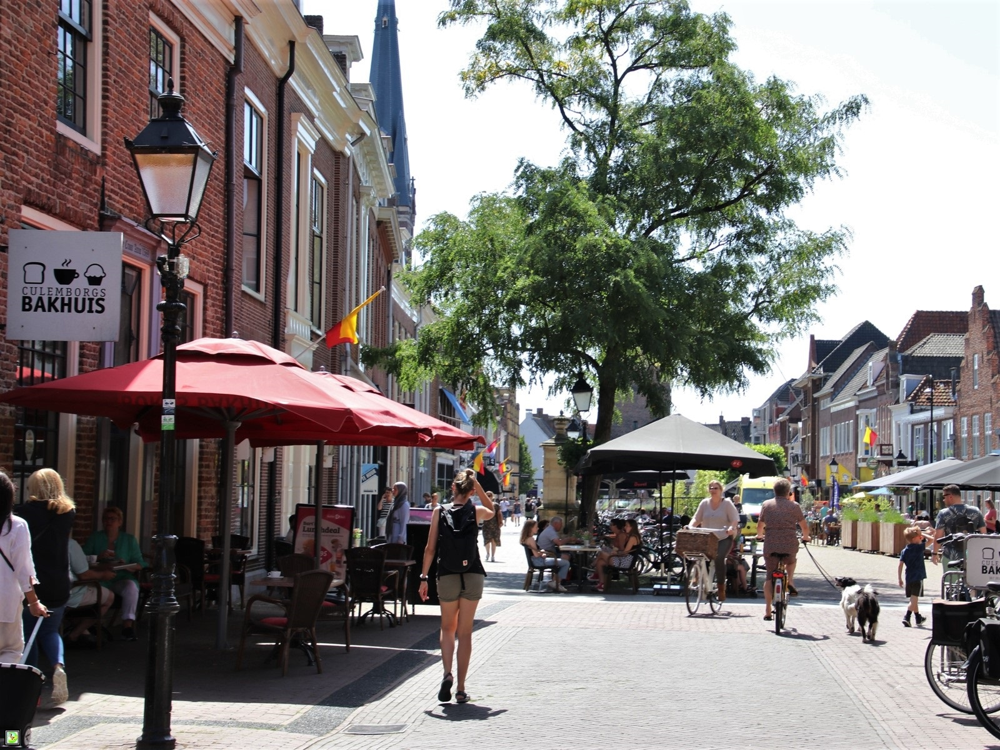

Bakkerij, winkel en Eetkamer aan de Markt in Culemborg
Vers uit eigen oven, gewoon op de Markt.
Brood en banket van eerlijke, pure grondstoffen. Iedere dag opnieuw gebakken, en vanuit de Eetkamer kijkt u zo de bakkerij in.
4,1 op Google, uit 144 reviews

Vandaag besteld, morgen klaar.
Bestel in onze webshop tot 15.00 uur. Wij bereiden uw bestelling met zorg en de volgende dag staat hij voor u klaar in de winkel. Bestelt u liever zakelijk, of voor een groter gezelschap? Bel ons even.
Eerlijk en puur, van korst tot kruim.
De geur van vers gebakken brood en banket, gemaakt van de allerbeste grondstoffen. Vers uit onze eigen oven, voor iedere smaak. In de winkel vindt u het hele assortiment, en een hele wand vol desem.
- Grootbroodvan casino tot kloosterbrood
- Desemons paradepaardje
- Kleinbrood
- Hartig
- Koek en cake
- Bak'thuis
- Specialiteiten

Uit de desemwand
- Betuws Desem
- Desem Spelt
- Meergranen desem
- Donker desem
- Desem maisbrood
- Pain de Arden
"Probeer zeker het desem en laat hem dan wat dikker snijden 15 tot 17mm is lekker. Verder is het overige brood ook lekker, en goed in te vriezen ( na het ontdooien niet droog !)"
Koffie met een kijkje in de bakkerij.
Bakkerij, winkel en Eetkamer zitten onder één dak. Schuif aan voor een bakje koffie met een vers broodje of een koek, en zie hoe wij met veel passie dagelijks voor u aan de slag gaan.



"Een echte bakker, dat zie je en ruik je. Mooi concept. Helemaal met dat bakje koffie met een vers broodje of een koek. En vers betekent hier dus gewoon dat het niet uit de diepvries komt. Dat proef je. Aanrader."
De hele dag ambachtelijk voor u gebakken. U proeft het verschil. Gemiddeld 4,1 sterren uit 144 Google-reviews.
U vindt ons op de Markt.
Midden in de binnenstad van Culemborg, achter de parasols. Loop binnen voor brood, of neem plaats in de Eetkamer.
Openingstijden
| maandag | 09.30 tot 17.00 |
| dinsdag | 08.30 tot 17.00 |
| woensdag | 08.30 tot 17.00 |
| donderdag | 08.30 tot 17.00 |
| vrijdag | 08.30 tot 17.00 |
| zaterdag | 08.00 tot 16.00 |
| zondag | gesloten |
Adres en contact
Culemborgs BakhuisMarkt 2-4
4101 BX Culemborg
0345 520 686
info@culemborgsbakhuis.nl
Zakelijk bestellen of interesse in een baan bij ons? Bel of mail ons gerust.

